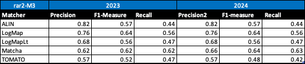
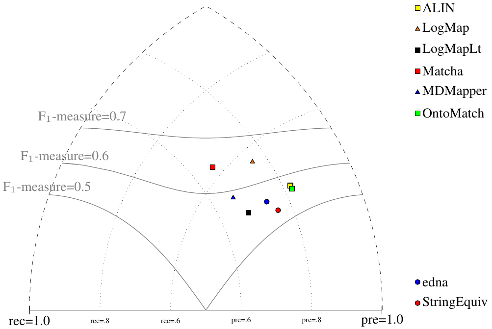
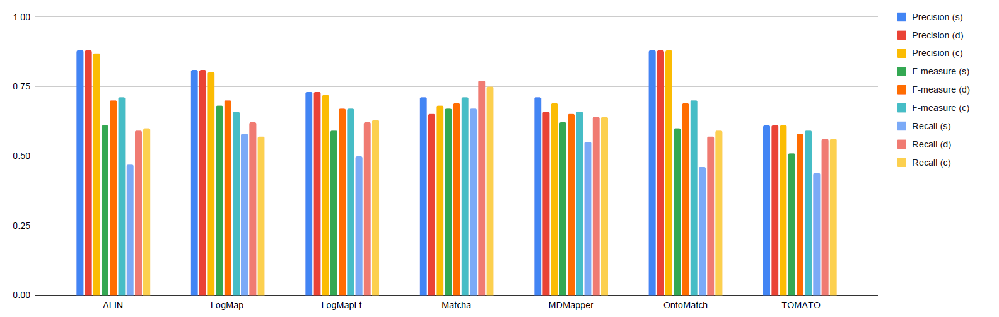
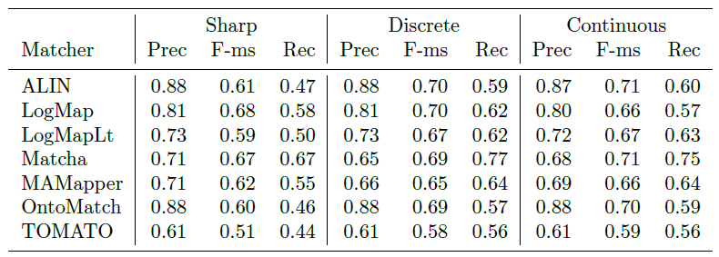

Web page content
This year, there were 7 participants (ALIN, LogMap, LogMapLt, Matcha, MDMapper, OntoMatch, and TOMATO) that managed to generate meaningful output. These are the matchers that were submitted with the ability to run the Conference Track. MDMapper and OntoMatch are two new matchers participating in this year.
You can download a subset of all alignments for which there is a reference alignment. We provide the alignments as generated by the MELT platform and in case of OntoMatch, we modified the generated alignments to match the MELT outputs. Alignments are stored as follows: SYSTEM-ontology1-ontology2.rdf.
Tools have been evaluated based on
We have three variants of crisp reference alignments (the confidence values for all matches are 1.0). They contain 21 alignments (test cases), which corresponds to the complete alignment space between 7 ontologies from the OntoFarm data set. This is a subset of all ontologies within this track (16) [4], see OntoFarm data set web page.
Here, we only publish the results based on the main (blind) reference alignment (rar2-M3). This will also be used within the synthesis paper.
For the crisp reference alignment evaluation, you can see more details - we provide three evaluation variants for each reference alignment.
Regarding evaluation based on reference alignment, we first filtered out (from alignments generated using MELT platform) all instance-to-any_entity and owl:Thing-to-any_entity correspondences prior to computing Precision/Recall/F1-measure/F2-measure/F0.5-measure because they are not contained in the reference alignment. In order to compute average Precision and Recall over all those alignments, we used absolute scores (i.e. we computed precision and recall using absolute scores of TP, FP, and FN across all 21 test cases). This corresponds to micro average precision and recall. Therefore, the resulting numbers can slightly differ with those computed by the MELT platform as macro average precision and recall. Then, we computed F1-measure in a standard way. Finally, we found the highest average F1-measure with thresholding (if possible).
In order to provide some context for understanding matchers performance, we included two simple string-based matchers as baselines. StringEquiv (before it was called Baseline1) is a string matcher based on string equality applied on local names of entities which were lowercased before (this baseline was also used within anatomy track 2012), and edna (string editing distance matcher) was adopted from benchmark track (wrt. performance it is very similar to the previously used baseline2).
With regard to the two baselines, we can group tools according to matcher's position (above best edna baseline, above StringEquiv baseline, below StringEquiv baseline), sorted by F1-measure. Regarding tools position, all tools keep the same position in ra1-M3, ra2-M3 and rar2-M3. There are six matchers above (or equal to) edna baseline (ALIN, LogMap, LogMapLT, Matcha, MDMapper, and OntoMatch), and one matcher below StringEquiv baseline (TOMATO). Since rar2 is not only consistency violation free (as ra2) but also conservativity violation free, we consider the rar2 as main reference alignment for this year. It will also be used within the synthesis paper.
Based on the evaluation variants M1 and M2, three matchers (ALIN, MDMapper, and OntoMatch) do not match properties at all.
For the crisp reference alignment evaluation, you can see more details - we provide three evaluation variants for each reference alignment.
Table below summarizes performance results of tools that participated in the last 2 years of OAEI Conference track with regard to reference alignment rar2.
Based on this evaluation, we can see that three of the matching tools (ALIN, LogMap, LogMapLt) did not change the results. TOMATO slightly decreased its F1-measure and recall. Matcha slightly increased all three, precision, F1-measure, and recall.

All tools are visualized in terms of their performance regarding an average F1-measure in the figure below. Tools are represented as squares or triangles. Baselines are represented as circles. Horizontal line depicts level of precision/recall while values of average F1-measure are depicted by areas bordered by corresponding lines F1-measure=0.[5|6|7].
The confidence values of all matches in the standard (sharp) reference alignments for the conference track are all 1.0. For the uncertain version of this track, the confidence value of a match has been set equal to the percentage of a group of people who agreed with the match in question (this uncertain version is based on reference alignment labeled ra1). One key thing to note is that the group was only asked to validate matches that were already present in the existing reference alignments - so some matches had their confidence value reduced from 1.0 to a number near 0, but no new matches were added.
There are two ways that we can evaluate alignment systems according to these `uncertain' reference alignments, which we refer to as discrete and continuous. The discrete evaluation considers any match in the reference alignment with a confidence value of 0.5 or greater to be fully correct and those with a confidence less than 0.5 to be fully incorrect. Similarly, an alignment system’s match is considered a `yes' if the confidence value is greater than or equal to the system’s threshold and a `no' otherwise. In essence, this is the same as the `sharp' evaluation approach, except that some matches have been removed because less than half of the crowdsourcing group agreed with them. The continuous evaluation strategy penalizes an alignment system more if it misses a match on which most people agree than if it misses a more controversial match. For instance, if A = B with a confidence of 0.85 in the reference alignment and an alignment algorithm gives that match a confidence of 0.40, then that is counted as 0.85 * 0.40 = 0.34 of a true positive and 0.85 – 0.40 = 0.45 of a false negative.
Below is a graph showing the F-measure, precision, and recall of the different alignment systems when evaluated using the sharp (s), discrete uncertain (d), and continuous uncertain (c) metrics, along with a table containing the same information. The results from this year show that more systems are assigning nuanced confidence values to the matches they produce.
 This year, out of the 7 alignment systems, 5 (ALIN, LogMapLt, MDMapper, OntoMatch, TOMATO) use 1.0 as the confidence value for all matches they identify. The remaining 2 systems (LogMap, Matcha) have a wide variation of confidence values.
The evaluation results based on the uncertain reference alignments reveal interesting insights into the behavior of different matchers when transitioning from the sharp to the uncertain metrics, both in discrete and continuous settings.
Starting with ALIN, we observe a significant improvement in performance when moving from the sharp to the uncertain evaluations. Its precision remains consistently high (0.88), but its F-measure and recall improve markedly in the discrete and continuous evaluations. This suggests that while ALIN identified fewer matches in the sharp setting, it excelled when considering uncertain matches, especially when crowd consensus was factored in. ALIN's ability to adapt to the continuous evaluation shows its robustness in handling uncertain matches, as its F-measure improves from 0.61 to 0.71, and recall increases from 0.47 to 0.60.
LogMap demonstrates a balanced performance across all metrics, with small but meaningful changes. Its precision remains stable at 0.81 in both the sharp and discrete evaluations, but it slightly drops in the continuous metric (0.80). However, LogMap's recall improves in both the discrete and continuous settings (0.58 to 0.62 and 0.57, respectively). This highlights LogMap's capacity to handle uncertain alignments better than most matchers, though it still assigns lower confidence to some high-consensus matches, which limits its precision slightly.
LogMapLt shows significant improvement in recall when moving from the sharp to the discrete and continuous metrics. In the sharp setting, its recall was only 0.50, but it climbs to 0.62 in the discrete and 0.63 in the continuous metrics. This indicates that LogMapLt was conservative in the sharp evaluation but gained confidence when handling uncertain alignments. However, its precision is slightly lower compared to others (0.73 in sharp and discrete, 0.72 in continuous), reflecting its tendency to assign lower confidence values to some correct matches.
Matcha presents an interesting case where its performance differs substantially between sharp, discrete, and continuous settings. While it performs well in terms of recall in the sharp evaluation (0.67), its precision drops in the discrete uncertain setting (0.65). However, its recall improves to 0.77, indicating that it successfully identifies uncertain matches. In the continuous evaluation, its F-measure and recall remain relatively high (0.71 and 0.75), showing that Matcha adapts well to the uncertain framework, albeit with a more cautious approach compared to its peers.
MAMapper exhibits stable recall across all metrics, from 0.55 in the sharp to 0.64 in both the discrete and continuous evaluations. Its precision, however, drops slightly from 0.71 in sharp to 0.66 in the discrete setting and 0.69 in the continuous setting. This suggests that while MAMapper is effective at recalling uncertain matches, it struggles to assign high confidence to them, which negatively impacts its precision.
OntoMatch behaves similarly to ALIN in terms of precision (0.88 across all metrics), but its F-measure and recall also improve in the discrete and continuous evaluations, from 0.46 in sharp to 0.57 and 0.59, respectively. Like ALIN, OntoMatch is conservative in the sharp evaluation but excels when incorporating uncertainty, reflecting its capability to adapt to uncertain data.
Finally, TOMATO demonstrates relatively consistent performance across all metrics but remains the weakest performer overall. Its recall increases slightly from 0.44 in sharp to 0.56 in both the discrete and continuous settings, but its precision and F-measure stay relatively low. TOMATO's results suggest that while it adapts to uncertainty, it struggles to capture high-consensus matches with confidence, which limits its overall performance.
In summary, the continuous evaluation provides a more nuanced view of each matcher’s strengths and weaknesses in handling uncertain reference alignments. Matchers like ALIN, LogMap, and OntoMatch show the most improvement when moving from sharp to uncertain evaluations, indicating their adaptability to more realistic, uncertain data. Conversely, matchers like TOMATO and MAMapper struggle with precision when handling uncertain matches, even if they exhibit stable recall. These results highlight the importance of considering confidence values in both the system's output and the reference alignments for a more comprehensive evaluation.
For evaluation based on logical reasoning we applied detection of conservativity and consistency principles violations [2, 3]. While consistency principle proposes that correspondences should not lead to unsatisfiable classes in the merged ontology, conservativity principle proposes that correspondences should not introduce new semantic relationships between concepts from one of input ontologies [2].
Table below summarizes statistics per matcher. There are number of alignments (#Incoh.Align.) that cause unsatisfiable TBox after ontologies merge, total number of all conservativity principle violations within all alignments (#TotConser.Viol.) and its average per one alignment (#AvgConser.Viol.), total number of all consistency principle violations (#TotConsist.Viol.) and its average per one alignment (#AvgConsist.Viol.).
Comparing to the last year only three tools (ALIN, LogMap, and OntoMatch) have no consistency principle violation while four tools have some consistency principle violations. Conservativity principle violations are made by all tools. Two tools (ALIN, OntoMatch) have very low number (2). Further four tools (LogMap, LogMapLt, Matcha, and MDMapper) have low numbers (less than 100). One tool (TOMATO) have more than 100 conservativity principle violations. However, we should note that these conservativity principle violations can be "false positives" since the entailment in the aligned ontology can be correct although it was not derivable in the single input ontologies.
Here we list ten most frequent unsatisfiable classes appeared after ontologies merge by any tool. Four tools generated incoherent alignments.
iasted#Worker_non_speaker - 4 iasted#Student_registration_fee - 4 iasted#Student_non_speaker - 4 iasted#Nonauthor_registration_fee - 4 iasted#Non_speaker - 4 ekaw#Workshop_Session - 4 ekaw#Session - 4 ekaw#Rejected_Paper - 4 ekaw#Regular_Session - 4 ekaw#Poster_Session - 4
Here we list ten most frequent unsatisfiable classes appeared after ontologies merge by ontology pairs. These unsatisfiable classes were appeared in all ontology pairs for given ontology:
edas#Reviewer - 5 edas#Review - 5 cmt#Reviewer - 5 cmt#Review - 5 cmt#PaperFullVersion - 5 cmt#PaperAbstract - 5 cmt#Paper - 5 cmt#Meta-Reviewer - 5 cmt#Meta-Review - 5 cmt#ExternalReviewer - 5
Here we list top 10 conservativity principle violations by any tool:
iasted#Record_of_attendance, iasted#City - 7 edas-iasted conference#Invited_speaker, conference#Conference_participant - 6 conference-ekaw iasted#Sponzorship, iasted#Registration_fee - 5 iasted-sigkdd iasted#Sponzorship, iasted#Fee - 5 iasted-sigkdd iasted#Session_chair, iasted#Speaker - 5 iasted-sigkdd ekaw-iasted iasted#Hotel_fee, iasted#Registration_fee - 5 iasted-sigkdd iasted#Fee_for_extra_trip, iasted#Registration_fee - 5 iasted-sigkdd sigkdd#Listener, sigkdd#Speaker - 4 iasted-sigkdd iasted#Video_presentation, iasted#Item - 4 conference-iasted edas-iasted iasted#Technical_commitee, iasted#Speaker - 4 iasted-sigkdd
[1] Michelle Cheatham, Pascal Hitzler: Conference v2.0: An Uncertain Version of the OAEI Conference Benchmark. International Semantic Web Conference (2) 2014: 33-48.
[2] Alessandro Solimando, Ernesto Jiménez-Ruiz, Giovanna Guerrini: Detecting and Correcting Conservativity Principle Violations in Ontology-to-Ontology Mappings. International Semantic Web Conference (2) 2014: 1-16.
[3] Alessandro Solimando, Ernesto Jiménez-Ruiz, Giovanna Guerrini: A Multi-strategy Approach for Detecting and Correcting Conservativity Principle Violations in Ontology Alignments. OWL: Experiences and Directions Workshop 2014 (OWLED 2014). 13-24.
[4] Ondřej Zamazal, Vojtěch Svátek. The Ten-Year OntoFarm and its Fertilization within the Onto-Sphere. Web Semantics: Science, Services and Agents on the World Wide Web, 43, 46-53. 2018.